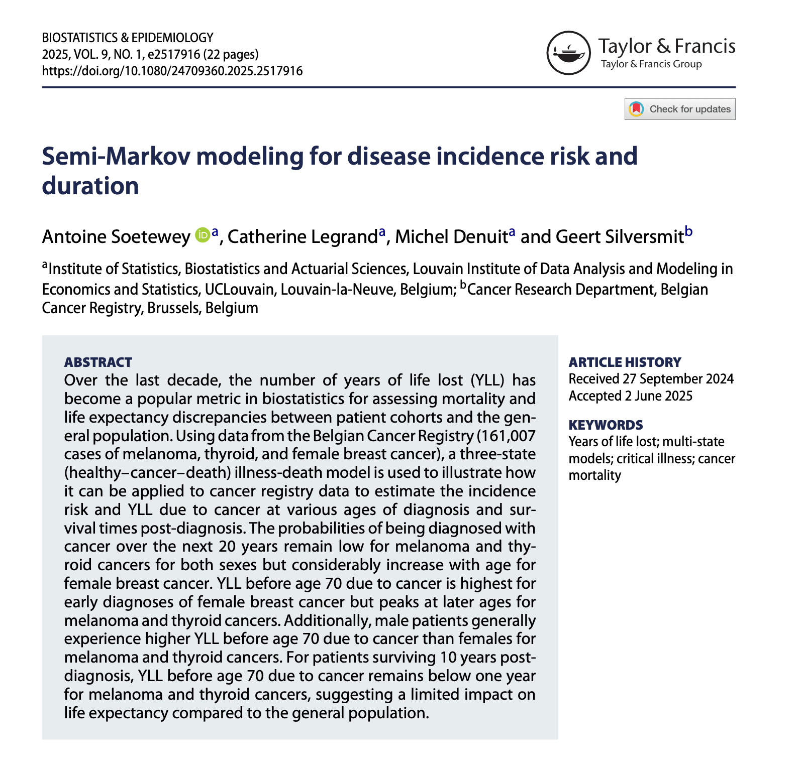

I’m happy to share that my latest research paper, “Semi-Markov modeling for disease incidence risk and duration” has been accepted for publication in the journal Biostatistics & Epidemiology (Soetewey et al., 2025).
Read the full paper here.
This work focuses on the use of a Semi-Markov illness-death model to estimate both:
The analysis relies on real-world data from the Belgian Cancer Registry, covering over 160,000 cases of melanoma, thyroid, and female breast cancer diagnosed between 2004 and 2020. By modeling transitions between “healthy,” “ill,” and “dead” states, we provide a comprehensive framework to better understand disease burden over time, not just at diagnosis, but also for long-term survivors.
One key feature of this work is its application to non-homogeneous Semi-Markov processes, allowing us to account for the time since diagnosis when estimating survival and life expectancy. This adds a clinically meaningful dynamic dimension to traditional multi-state models.
Beyond its methodological contributions, this study has important implications for public health and insurance regulation. In particular, the results offer quantitative support for the right to be forgotten; a legal provision that allows cancer survivors to apply for credit or insurance products without being penalized once they’ve reached a certain number of years since the end of treatment.
Our results suggest that, for many patients who survive 10 years post-diagnosis, the expected loss in life years compared to the general population becomes minimal, sometimes even below one year. This is especially true for cancers like melanoma and thyroid cancer. These findings could contribute to more equitable and evidence-based insurance underwriting practices.
This research was a collaborative effort, and I would like to express my sincere thanks to my former PhD supervisors, Catherine Legrand, Michel Denuit (UCLouvain) and Geert Silversmit (Belgian Cancer Registry), for their invaluable guidance and support throughout the project.
Thanks for reading!
Soetewey, A., Legrand, C., Denuit, M., & Silversmit, G. (2025). Semi-Markov modeling for disease incidence risk and duration. Biostatistics & Epidemiology, 9(1). https://doi.org/10.1080/24709360.2025.2517916